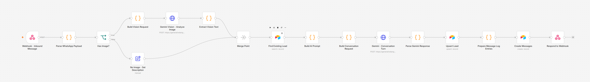
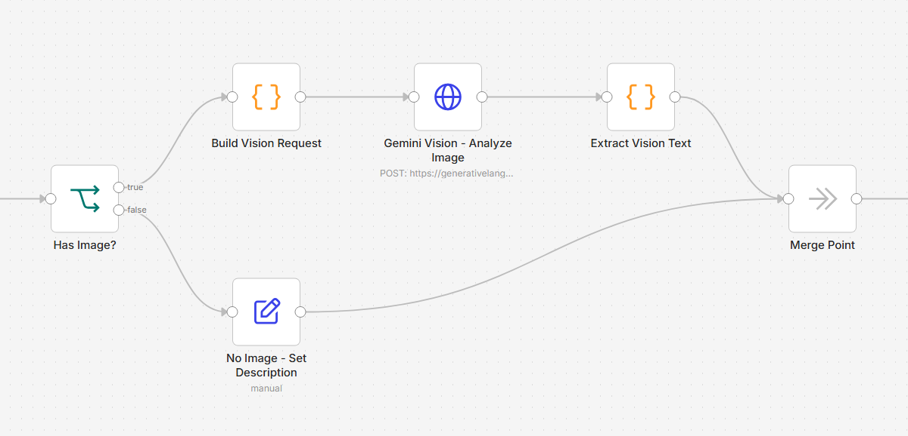
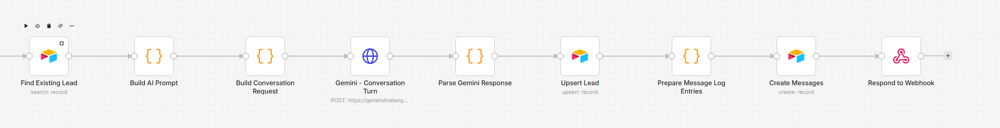
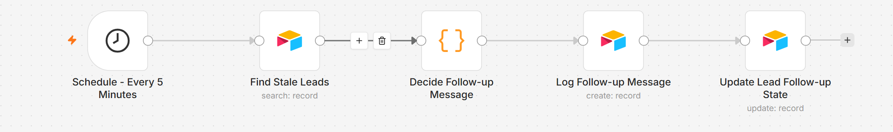

Built this after noticing a recurring pattern in real automation job listings: businesses running WhatsApp-based lead capture that handles basic conversation fine, but breaks down on three specific things — reading images senders attach, turning the AI's understanding into structured CRM fields instead of a wall of chat text, and sending follow-ups that actually know what's still missing rather than repeating the same nudge. I built a self-contained version of that system end to end — real n8n workflows, a real Airtable CRM, a real Gemini-powered conversation — with only the WhatsApp channel itself simulated, since getting Meta Business API approval isn't something a demo needs.

Reading images, not just storing them
When a lead sends a photo — a reference sample, packaging, a product photo — the workflow branches, sends the image straight to Gemini's vision model for a short description, then folds that description into the same context the conversational AI uses to reply. The image isn't just an attachment sitting in a field; it directly shapes what the AI says next and what gets written to the CRM.

Structured extraction, not a wall of text
The AI doesn't just chat — every reply is generated as structured JSON (name, product interest, quantity, reference links, conversation stage) via Gemini's response schema, so there's nothing to regex out of a paragraph. Those fields upsert straight into the Leads table, matched on the visitor's WhatsApp ID, so a returning contact updates their existing record instead of creating a duplicate. Every inbound and outbound message is also logged to a linked Messages table, giving a full audit trail alongside the structured snapshot.

Follow-ups that know what's missing
A separate scheduled workflow checks for leads that have gone quiet, and instead of firing the same generic nudge, it looks at which specific field is still empty — product interest, quantity, or reference links — and sends a follow-up written for that gap specifically. After three attempts with no response, the lead is marked Stalled instead of nagged indefinitely.

Tech stack
- Automation — n8n (self-hosted via Docker), workflows built and tested through n8n's REST API
- AI — Google Gemini (conversation + vision), structured JSON output via response schema instead of free-text parsing
- CRM — Airtable (Leads + Messages tables, linked records, upsert-on-match)
- Channel simulation — a small WhatsApp-style chat UI (vanilla HTML/JS) sending real WhatsApp Cloud API-shaped webhook payloads
What it demonstrates
- Designing multi-branch n8n workflows (image vs. text, merge points, conditional follow-up logic) that stay debuggable
- Using an LLM's structured-output mode to write directly into a CRM schema, not scraping a chat transcript after the fact
- Treating a CRM field, not just a chat window, as the AI's memory — a returning lead's known info feeds back into the next prompt
- Building and testing automation end-to-end via API (workflow creation, execution logs, live webhook calls) rather than only clicking through an editor